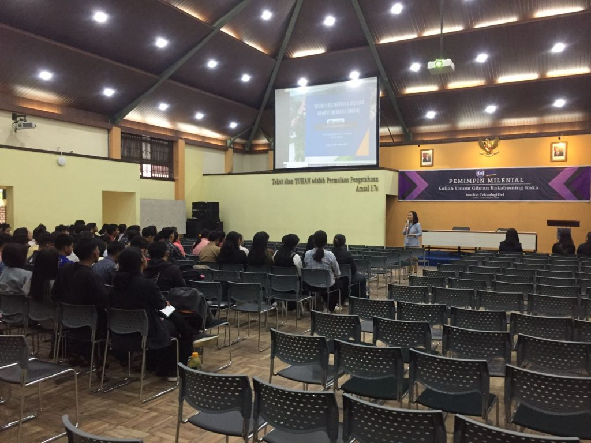

Berita Terkini
Berita Terkini seputaran kampus Institut Teknologi Del

IT Del Sosialisasikan Program MBKM kepada Mahasiswa
Pada Kamis, 23 November 2023, Divisi Pembelajaran Diluar Kampus UPT PP ESTEM melaksanakan sosialisasi MBKM (Merdeka Belajar Kampus Merdeka), untuk mahasiswa-mahasiswi IT Del.

Sampling Kemenyan Toba di Kabupaten Tapanuli Utara, Kabupaten Humbang Hasundutan, dan Kabupaten Pakpak Bharat
Tim Institut Teknologi Del yang terdiri atas Ymelda A. C. Manurung, M.Sc. (Peneliti Genomik Herbal KHDTK IT Del), Roga Florida Kembaren, M.Si. (Dosen Teknik Bioproses IT Del)

IT Del Ikuti Kegiatan KMI EXPO XIV di Bali Hingga Terima Penghargaan Pendamping Terbaik
Pada tanggal 15-17 November 2023, Institut Teknologi Del turut serta mengikuti kegiatan kompetisi KMI EXPO XIV 2023 yang diselenggarakan, oleh Belmawa di Universitas Pendidikan Ganesha, Singaraja Bali.